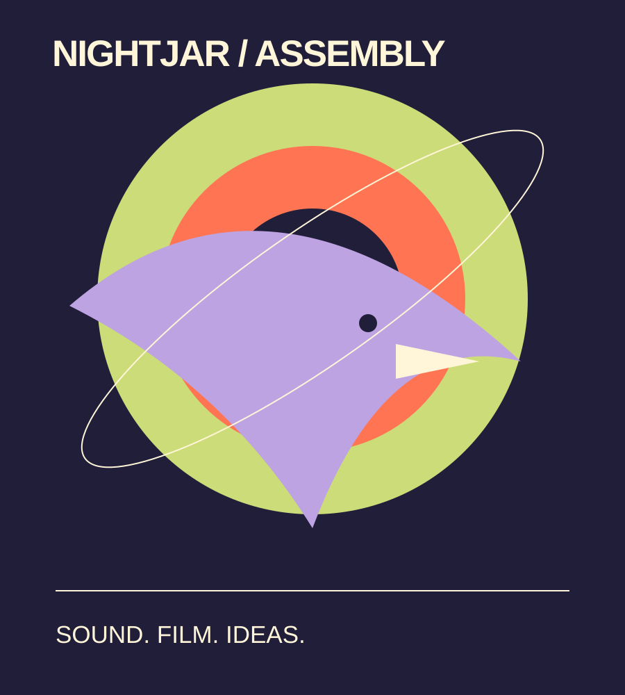

Event detail
A room for close listening.
An example event page that gives the experience and its practical details equal attention.

Sound / Listening room
Hear it together.
A sample format for an attentive listening session and a conversation about how sound changes a space. Replace this description with the real performer and program details.
- Running timeAdd the confirmed performance and discussion duration.
- AccessAdd step-free access, seating, hearing provision, sensory information, and a contact for questions.
- Audience informationState age policy, content guidance, admission rules, and whether late arrival is possible.
There is no ticket service or live availability in this source edition. Replace this inquiry action with a verified ticket destination only when ready.
Film / After the light
See something, then talk.
Use this section for confirmed film titles, creators, running times, screening rights, captioning, and discussion details.
Ideas / An open table
Leave space for a different view.
Describe the conversation format, host, capacity, and how participation works. Do not promise an available place until the actual registration route is connected.